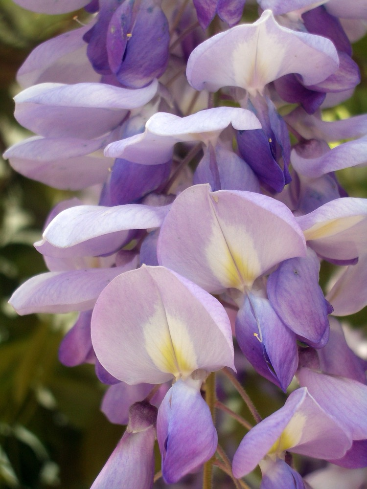
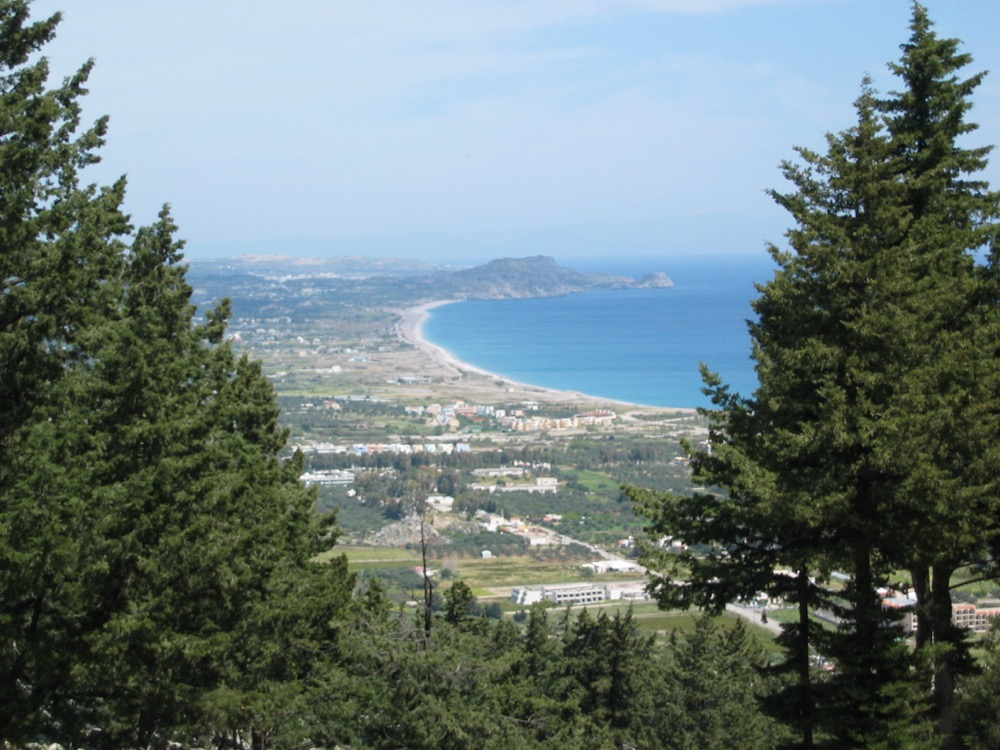
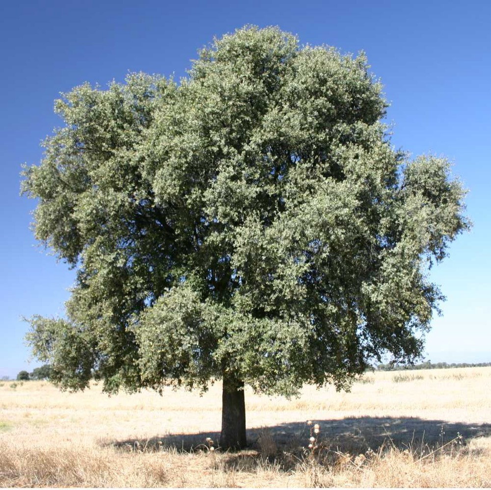
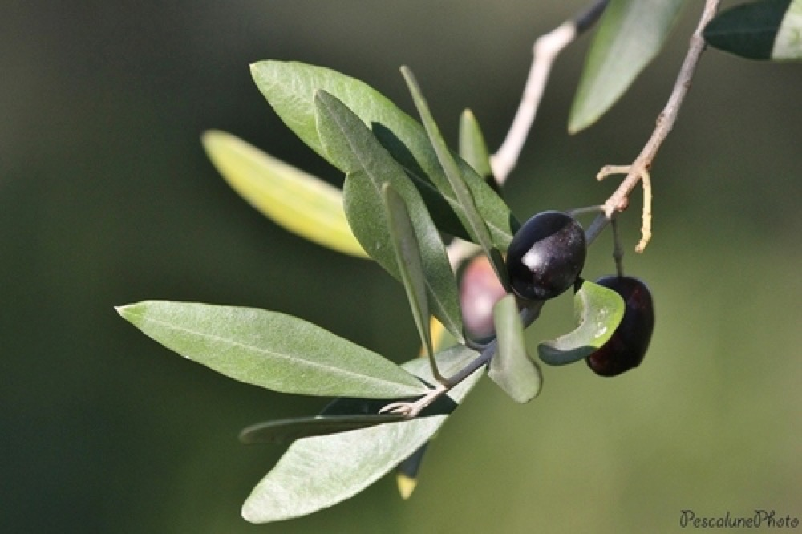
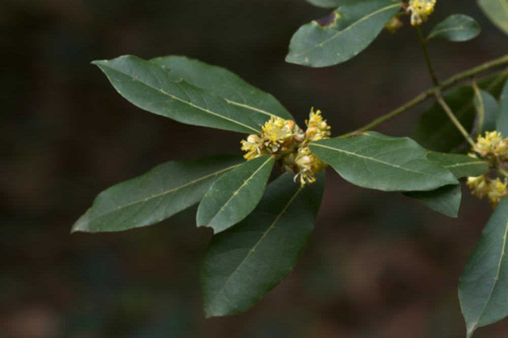
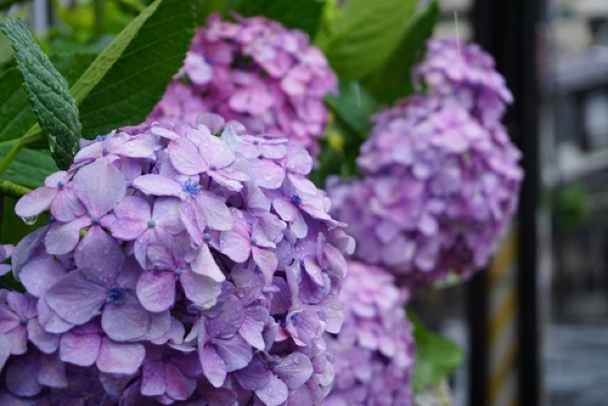
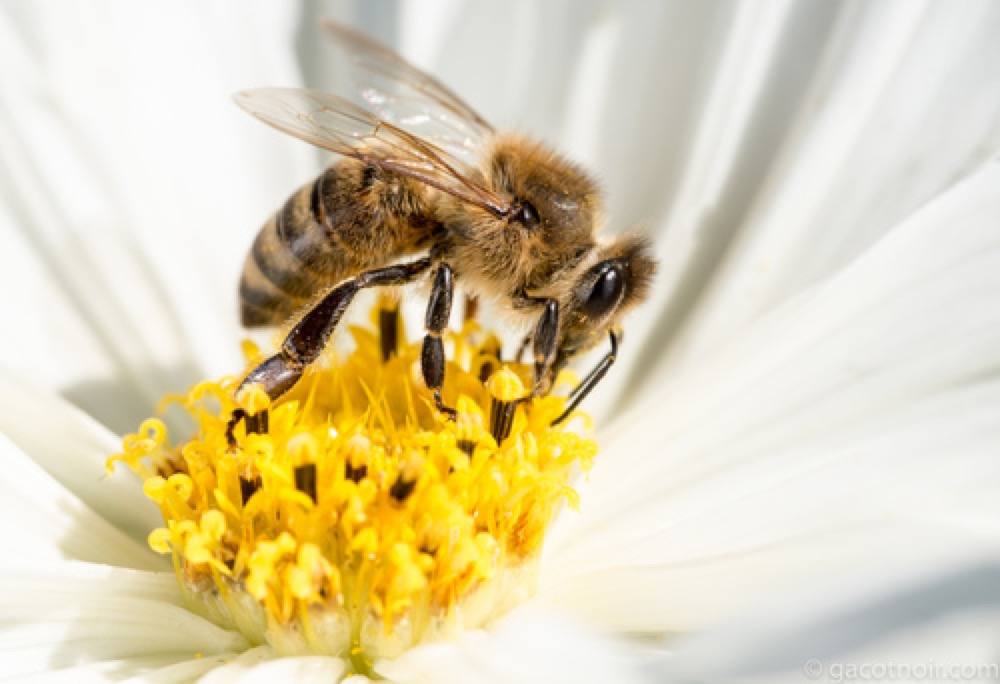
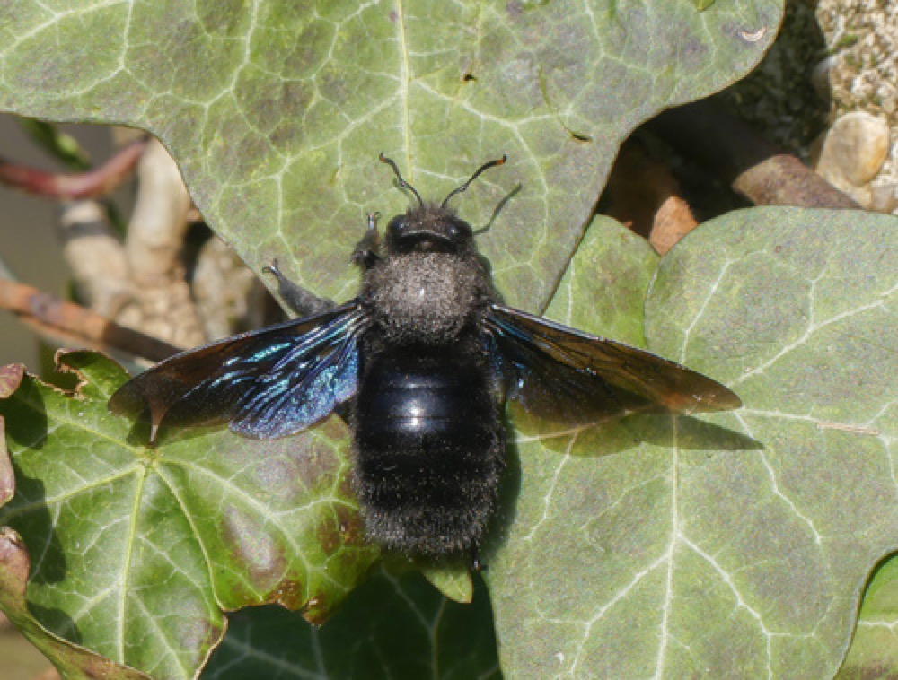
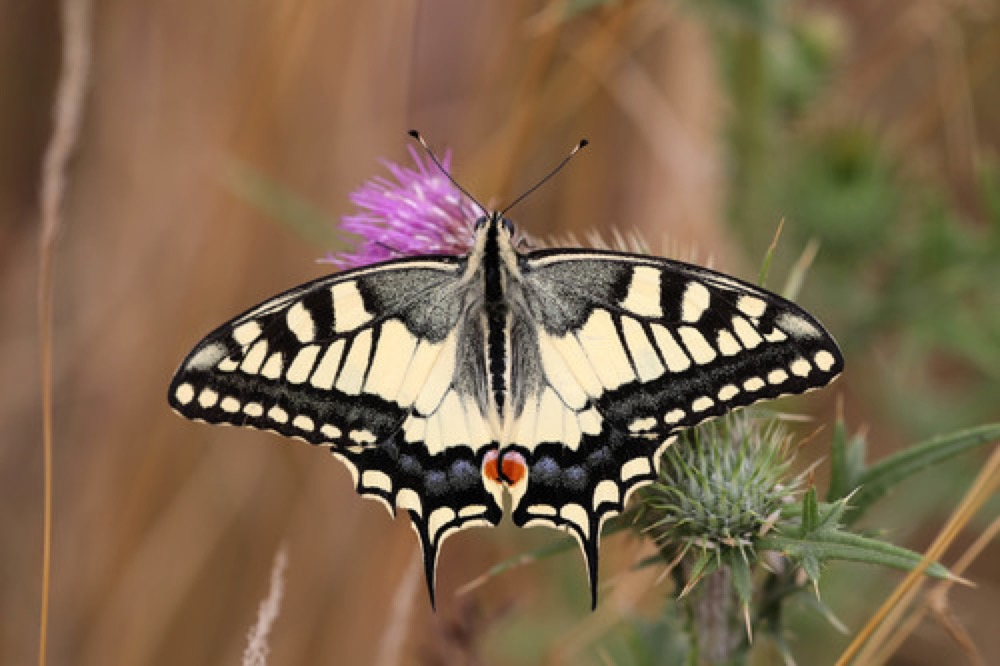
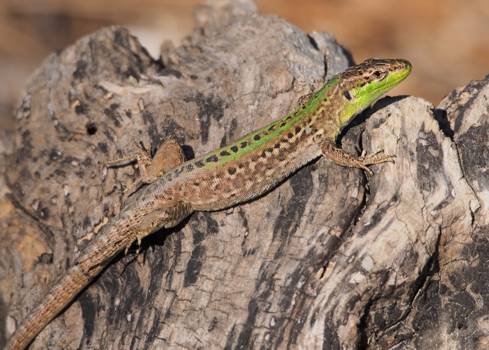

Identification Guide
What You Are Likely To Notice At Bardini
Bardini's own garden description names holm oaks, phyllireas, olive trees, hydrangeas, roses, camellias, azaleas, and the wisteria pergola. In August, expect structure, leaves, shade, insects, and dry-season Mediterranean toughness more than peak spring bloom.

Plant
Wisteria pergola
Look for the long woody vine structure overhead; the famous purple bloom is mostly April-May, so today it is more architecture than flower show.
Bardini names Japanese wisteria varieties plus Wisteria sinensis 'Prolific' on the pergola.

Tree
Mediterranean cypress
Tall, dark, pencil-like silhouettes; classic Tuscan skyline punctuation.
Watch for them on views, walls, and neighboring gardens rather than only inside Bardini.

Tree
Holm oak
Evergreen oak with dense, leathery, dark leaves; it reads as deep shade in a hot Mediterranean garden.
Bardini specifically notes copses and centuries-old trees including holm oaks.

Tree
Olive
Silvery, narrow leaves; gnarled trunks; a softer gray-green than cypress or oak.
Good for training your eye to read the dry Mediterranean palette.

Plant
Bay laurel
Glossy, aromatic, lance-shaped leaves; often clipped or tucked into Mediterranean plantings.
Do not pick leaves in the garden; just notice the culinary plant language.

Flowering shrub
Hydrangea / hortensia
Broad leaves and rounded flower heads; in heat they may look tired, but they are part of Bardini's named collection.
Best spotted where there is more shade and irrigation.

Insect
Honey bee
Small, amber-brown, flower-focused; usually too busy to care about you.
Watch flowering herbs, roses, and shaded blooms if anything is still active in the heat.

Insect
Violet carpenter bee
Large, dark, shiny, with violet-blue wings; looks dramatic, usually solitary.
Most likely around big flowers and warm walls if the garden still has nectar.

Insect
Swallowtail butterfly
Yellow wings, black veining, tail-like points; quick and elegant when it appears.
Not guaranteed, but plausible in warm gardens with fennel, rue, citrus, or nectar flowers nearby.

Reptile
Italian wall lizard
Small, fast, green-brown, sunning on stone, walls, steps, and dry edges.
Most likely in the warm margins of paths and masonry; blink and it has already judged your shoes.
Image credits: plant photos via Wikimedia Commons source files; olive, bay, hydrangea, honey bee, violet carpenter bee, swallowtail, and Italian wall lizard photos via iNaturalist source files. Local copies are used so the public page does not depend on fragile hotlinks.